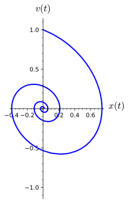

is called a second-order linear differential equation. We will first consider the case
\begin{equation*}
a x'' + b x' + cx = 0,
\end{equation*}
where \(a\text{,}\)\(b\text{,}\) and \(c\) are constants and \(a \neq 0\text{.}\) An equation of this form is said to be homogeneous with constant coefficients. We already know how to solve such equations since we can rewrite them as a system of first-order linear equations. Thus, we can find the general solution of a homogeneous second-order linear differential equation with constant coefficients by computing the eigenvalues and eigenvectors of the matrix of the corresponding system.
Subsection4.1.1RLC Circuits
Recall the RC circuits that we studied earlier (see Section 1.3). Such circuits contained a voltage source, a capacitor, and a resistor. A battery or generator is an example of a voltage source, and a toaster or an electric stove is an example of something that might provide a resistance in a circuit. Capacitors store an electrical charge and are used in electronic flashes for cameras. We will now add an inductor such as a solenoid, a coil that generates a magnetic field. Inductor applications include transformers, power supplies, televisions, and radios. Our new circuit is called an RLC circuit (Figure 4.1.1).
Figure4.1.1.An RLC Circuit
Current, \(I(t)\text{,}\) is the rate at which a charge flows through this circuit and is measured in amperes or amps. We assign a direction to the current, and a current flowing in the opposite direction will be given negative values. The impressed voltage, \(E(t)\text{,}\) is measured in volts, the resistance \(R\) is measured in ohms, and the capacitance \(C\) is measured in farads. The charge on the capacitor \(Q(t)\) at time \(t\) is measured in coulombs. Inductance on the coil, \(L\text{,}\) is measured in henrys.
The following laws from physics govern how our circuit behaves.
\(I = \dfrac{dQ}{dt}\text{.}\)
The voltage drop across a resistor is \(IR\) (Ohm's Law).
The voltage drop across a capacitor is \(Q/C\text{.}\)
The voltage drop across an inductor is \(L (dI/dt)\text{.}\)
In a closed circuit the impressed voltage is equal to the sum of the voltage drops in the rest of the circuit (Kirchhoff's Second Law).
Applying Kirchhoff's Second Law to our circuit, we have the differential equation
\begin{equation}
L \frac{dI}{dt} + RI + \frac{1}{C} Q = E(t)\tag{4.1.1}
\end{equation}
\begin{equation*}
L I'' + RI' + \frac{1}{C} I = E'(t).
\end{equation*}
For example, we might consider an RLC circuit with \(R = 1\text{,}\)\(L = 1\text{,}\) and \(C = 1\text{.}\) At \(t = 0\) when both \(I(0) =0\) and \(I'(0) = Q(0) = 0\text{,}\) the impressed voltage on the circuit is given by \(E(t) = \sin(t)\text{.}\) Our equation becomes
\begin{equation*}
I'' + I' + I = E'(t) = \cos t.
\end{equation*}
This is an example of a second-order linear differential equation.
Subsection4.1.2Second-Order Linear Equations
Suppose that we have a homogeneous second-order linear differential equation with constant coefficients,
\begin{equation}
a x'' + b x' + cx = 0.\tag{4.1.2}
\end{equation}
The goal of this section is to be able to solve all such equations. However, we did a great deal of work finding unique solutions to systems of first-order linear systems equations in Chapter 3. Our efforts are now rewarded. Since each second-order homogeneous system with constant coefficients can be rewritten as a first-order linear system, we are guaranteed the existence and uniqueness of solutions. Indeed, we can rewrite (4.1.2) as a system of first-order linear equations,
\begin{align*}
x' & = y\\
y' & = -\frac{c}{a} x - \frac{b}{a} y,
\end{align*}
and then find the general solution by computing the eigenvalues and eigenvectors of the matrix of the corresponding system.
Solutions of a linear system \({\mathbf x}' = A {\mathbf x}\) often include terms of the form \(e^{r t}\text{.}\) It makes sense that solutions to equation (4.1.2) take the same form. Consider the equation
has characteristic polynomial \(\lambda^2 + 3 \lambda - 10\text{.}\) The eigenvalues of \(A\) are \(\lambda_1 = -5\) and \(\lambda_2 = 2\) with eigenvectors \(\mathbf v_1 = (1, -5)\) and \(\mathbf v_2 = (1, 2)\text{,}\) respectively. Consequently, the solution to our system is
\begin{equation*}
a x'' + b x' + c x = 0,
\end{equation*}
where \(a \neq 0\text{.}\) Applying the strategy in Example 4.1.2, we can find the general solution for this equation by finding the roots of the quadratic polynomial \(a \lambda^2 + b \lambda + c\text{,}\)
where \(c_1\) and \(c_2\) are arbitrary constants.
To prove that equation (4.1.5) is indeed the general solution to the second-order equation \(a x'' + b x' + c x = 0\text{,}\) we can study the equivalent system of linear equations. If we let \(y = x'\text{,}\) the corresponding linear system is \(\mathbf x' = A \mathbf x\text{,}\) where
for \(\lambda_1\) and \(\lambda_2\text{,}\) respectively. Thus, the general solution to the system of differential equations \(\mathbf x' = A \mathbf x\) is
respectively. We claim that both \(x_1(t)\) and \(x_2(t)\) are solutions to our differential equation. Indeed, since \(x(t) = x_1(t) + i x_2(t)\) is a solution,
Since the real part and the imaginary part of \(x(t)\) must both be zero, we can conclude that \(ax_1'' + bx_1' + cx_1 = 0\) and \(ax_2'' + bx_2' + cx_2 = 0\text{.}\) Therefore, the general solution to our equation is
\begin{equation*}
x(t) = c_1 e^{-2t} \cos t + c_2 e^{-2t} \sin t.
\end{equation*}
To apply our initial conditions \(x(0) = 1\) and \(x'(0) = 1\text{,}\) we first calculate
The vector \(\mathbf v = (1, \alpha + i \beta)\) is an eigenvector for \(\lambda\text{.}\) Thus, a solution to our system of differential equations is
\begin{align*}
\mathbf x(t) \amp = \begin{pmatrix} x(t) \\ y(t) \end{pmatrix}\\
\amp = \begin{pmatrix} x(t) \\ x'(t) \end{pmatrix}\\
\amp = e^{(\alpha + i \beta)t} \begin{pmatrix} 1 \\ \alpha + i \beta \end{pmatrix}\\
\amp = e^{\alpha t} (\cos \beta t + i \sin \beta t) \begin{pmatrix} 1 \\ \alpha + i \beta \end{pmatrix}\\
\amp = e^{\alpha t} \begin{pmatrix} \cos \beta t \\ \alpha \cos \beta t - \beta \sin \beta t \end{pmatrix} + i e^{\alpha t} \begin{pmatrix} \sin \beta t \\ \alpha \sin \beta t + \beta \cos \beta t \end{pmatrix}.
\end{align*}
Taking the real and imaginary parts of \(x(t)\text{,}\) we obtain two real solutions to the system, \(x_1(t) = e^{\alpha t} \cos \beta t\) and \(x_2(t) = e^{\alpha t} \sin \beta t\text{.}\) Therefore, the general solution to \(ax_1'' + bx_1' + cx_1 = 0\) is
\begin{equation*}
x(t) = c_1 e^{\alpha t} \cos \beta t + c_2 e^{\alpha t} \sin \beta t.
\end{equation*}
Given a second-order linear differential equation with constant coefficients, \(ax'' + bx' + cx = 0\text{,}\) our strategy has been to solve the characteristic equation \(a \lambda^2 + b \lambda + c = 0\) to obtain two linearly independent solutions. We have covered the case where this equation has two distinct real solutions as well as when there are complex solutions, but what if there is only a single real solution \(\lambda = -b/2a\text{?}\)
Thus, \(\lambda = -1\) and we have a solution \(x_1(t) = e^{-t}\text{.}\)
In order to find a general solution to \(x'' + 2x' + x = 0\text{,}\) we must find a second solution that is not a multiple of \(x_1(t) = e^{-t}\text{.}\) Since we already know that \(c x_1(t)\) is a solution to our differential equation, we will try to generalize this observation by replacing \(c\) with a nonconstant function \(v(t)\) and then try to determine \(v(t)\) so that \(v(t) x_1(t)\) is a solution to \(x'' + 2x' + x = 0\text{.}\) Indeed, if
and \(v'' = 0\text{.}\) Therefore, \(v = c_1 t + c_2\text{.}\) Letting \(c_1 = 1\) and \(c_2 = 0\text{,}\) we can assume that \(v(t) = t\text{,}\) and the second solution to our equation is \(x = t e^{-t}\text{.}\) Hence, the general solution to \(x'' + 2x' + x = 0\) is
\begin{equation*}
x(t) = c_1 e^{-t} + c_2 t e^{-t}.
\end{equation*}
We leave it as an exercise to show that our solution agrees with the solution that we would obtain from solving the equivalent first-order linear system.
The technique that we have used in Example 4.1.4 is called reduction of order. We leave it as an exercise to show that this technique works in general. That is, given a second-order linear differential equation
\begin{equation*}
a x'' + bx' + cx = 0
\end{equation*}
such that \(b^2 - 4ac = 0\text{,}\) then the general solution is given by
Recall from Subsection 1.1.3 that we can model harmonic motion using the equation
\begin{equation*}
m \frac{d^2 x}{dt^2} + b \frac{dx}{dt} + k x = 0.
\end{equation*}
In the case of a spring-mass system, \(m\) is the oscillating mass, \(b\) is the damping coefficient, and \(k\) is the spring constant. It is important to remember that both \(m\) and \(k\) are positive constants and \(b \geq 0\text{.}\)
If \(b = 0\text{,}\) then the oscillator is undamped In this case,
\begin{equation}
m \frac{d^2 x}{dt^2} + k x = 0.\tag{4.1.6}
\end{equation}
The characteristic equation is
\begin{equation*}
m \lambda^2 + k = 0,
\end{equation*}
and we have eigenvalues \(\lambda = \pm i \sqrt{k/m}\text{.}\) Hence, the complex solution to our undamped oscillator is
\begin{equation*}
e^{i \omega t} = \cos \omega t + i \sin \omega t,
\end{equation*}
where \(\omega = \sqrt{k/m}\text{.}\) Since both the real and imaginary parts of the complex solution are also solutions to (4.1.6), the general solution to the undamped harmonic oscillator is
where \(v(t) = x'(t)\) is the velocity of the oscillator (Figure 4.1.6). Examining the phase plane of the undamped oscillator, we find that the period of the oscillations is given by \(2 \pi / \omega = 2 \pi / 3 \approx 2.094\) (Figure 4.1.7).
Figure4.1.6.Position and velocity of an undamped harmonic oscillatorFigure4.1.7.The phase plane of an undamped harmonic oscillator
If we add damping to the oscillator, the equation becomes
\begin{equation}
m \frac{d^2 x}{dt^2} + b \frac{dx}{dt} + k x = 0.\tag{4.1.7}
\end{equation}
where \(b \gt 0\text{.}\) The charactersitic equation of (4.1.7) is
\begin{equation*}
m\lambda^2 + b\lambda + k = 0\text{,}
\end{equation*}
There are three possible types of types of motion for the oscillator depending on the nature of the roots of (4.1.8).
If the damping value of \(b\) is small when compared to \(4mk\text{,}\) then \(b^2 - 4mk \lt 0\) and the roots of (4.1.8) will be complex. Furthermore, the real part of each root, \(-b/ 2m\text{,}\) is always negative. In such a situation, we say that the oscillator is under-damped.
If the damping value of \(b\) is large , then \(b^2 - 4mk \gt 0\text{,}\) and we obtain distinct real negative roots for (4.1.8). The oscillator is over-damped.
Finally, we say that the oscillator is critically-damped if \(b^2 - 4mk = 0\text{.}\)
Notice that the damping \(b = 0.4\) is very small compared with the spring constant \(k = 1.04\text{.}\) The characteristic equation of the differential equation is \(\lambda^2 + 0.4 \lambda + 1.04 = 0\text{,}\) which has roots \(\lambda = -0.2 \pm i\text{.}\) Therefore, the complex solution must be
\begin{equation*}
x(t) = e^{(-0.2 \pm i)t} = e^{-0.2t} ( \cos t + i \sin t),
\end{equation*}
and the general solution must be
\begin{equation*}
x(t) = c_1 e^{-0.2t} \cos t + c_2 e^{-0.2t} \sin t.
\end{equation*}
Applying the initial conditions, our solution becomes
Notice that the period of the oscillations, \(2 \pi / \omega = 2 \pi \approx 6.283\text{,}\) does not change; however, the amplitude slowly decreases (Figure 4.1.9 and Figure 4.1.10).
Figure4.1.9.Position and velocity of an under-damped harmonic oscillator

Figure4.1.10.The phase plane of an under-damped harmonic oscillator
As we increase the damping, the oscillations will cease to occur for some value of \(b\text{.}\) This will happen when \(b^2 - 4mk = 0\text{.}\) the At this point we have critical damping. Consider the system
Although we see that no oscillations for this oscillator (Figure 4.1.15 and Figure 4.1.16), oscillations will commence as soon as we start to reduce the damping constant \(b = 4\text{.}\)
Figure4.1.15.Position and velocity of a critically damped harmonic oscillatorFigure4.1.16.The phase plane of a critically damped harmonic oscillator
Subsection4.1.4Important Lessons
A second-order linear differential equation with constant coefficients is an equation of the form
\begin{equation*}
a x'' + bx' + cx = 0.
\end{equation*}
We can guess the solution to this equation. Since we can rewrite this equation as a system of first-order linear differential equations, we can determine the general solution to \(a x'' + bx' + cx = 0\text{.}\)
Suppose that
\begin{equation*}
a x'' + b x' + c x = 0,
\end{equation*}
where \(a \neq 0\) and \(b^2 - 4ac \gt 0\text{.}\) If the roots of \(ar^2 + br + c\) are \(r_1\) and \(r_2\text{,}\) the general solution to this differential equation is
A simple harmonic oscillator can be modeled by the equation
\begin{equation*}
m \frac{d^2 x}{dt^2} + b \frac{dx}{dt} + k x = 0,
\end{equation*}
where \(m \gt 0\text{,}\)\(k \gt 0\text{,}\) and \(b \geq 0\text{.}\) There are three possible types of motion for the oscillator depending on the sign of \(b^2 - 4mk\text{.}\)
If \(b^2 - 4mk \lt 0\text{,}\) the oscillator is under-damped.
If \(b^2 - 4mk \gt 0\text{,}\) the oscillator is over-damped.
If \(b^2 - 4mk = 0\text{,}\) the oscillator is critically damped.
Reading Questions4.1.5Reading Questions
1.
What is the characteristic equation of \(ax'' + bx' + cx = 0\text{?}\)
2.
Describe the possible types of damping of a harmonic oscillator?
Consider the harmonic oscillators with mass \(m\text{,}\) damping coeeficient \(b\text{,}\) and spring constant \(k\) in Exercise Group 4.1.6.21–28.
Write the second-order initial value problem corresponding for the harmonic oscillator.
Classify the oscillator as undamped, under-damped, over-damped, or critically damped.
Solve the initial value problem.
Sketch the \(x(t)\) and \(v(t)\)-graphs of the solution of the initial value problem.
Sketch the phase portrait of the initial value problem.
In Exercise Group 4.1.6.29–31, we will consider the motion of a mass \(m\) hanging at the end of a vertical spring as in Figure 4.1.17. The mass stretches the spring in a downward (positive) direction by length \(L\text{.}\) There are two forces acting on the point where the mass is attached to the spring—the force exerted by the spring and gravity. The force of gravity, the weight of the mass, acts downward with a magnitude of \(mg\text{,}\) where \(g\) is the acceleration due to gravity. On the other hand, the force of the spring acts upward and is given by \(-kL\text{,}\) where \(L\) is the length of the spring. 1  When the mass is hanging in equilibrium the force of gravity and the force of the spring balance each other out; that is,
\begin{equation*}
mg - kL = 0.
\end{equation*}
Figure4.1.17.A spring-mass system
We would like to investigate the motion of the mass if is initially displaced or acted on by an external force. Let \(x(t)\) be the displacement of the mass from its equilibrium position, where a downward displacement is positive. The force acting on the mass are the weight of the mass \(mg\) and the force exerted by the spring, which is the total elongation of the spring, or
Suppose that a mass of \(100\) grams stretches a spring \(2\) centimeters.
Determine the spring constant \(k\text{.}\)
If the mass is displaced an additional \(4\) centimeters and released, write an initial value problem that will model the motion of the oscillating mass.
Solve the initial value problem.
30.
Suppose that a mass of \(1\) kilogram stretches a spring \(5\) centimeters.
Determine the spring constant \(k\text{.}\)
If the mass is displaced an additional \(5\) centimeters and released, write an initial value problem that will model the motion of the oscillating mass.
Suppose the the spring-mass system is suspended in a fluid that exerts a resistance of \(0.25\) kilograms when the mass has a velocity of \(2\) centimeters per second. Modify the intial-value problem that you wrote in (b) to take this fact into account.
Solve the initial value problem.
31.
Suppose that a mass weighing 4 lbs stretches a spring 3 inches.
If \(g = 32 \text{ft/sec}^2\text{,}\) determine \(m\text{.}\)
Determine the spring constant \(k\text{.}\)
If the mass is displaced an additional 6 inches and released, write an initial value problem that will model the motion of the oscillating mass.
If we let \(u = v'\text{,}\) then a solution of \(2tu' - u = 0\) is \(u = \sqrt{t}\) and \(v = \int \sqrt{t} \, dt = 2 t^{3/2} / 3\text{.}\) Therefore, the second solution to our equation is
\begin{equation*}
x = \frac{v}{t} = \frac{2}{3} \sqrt{t}.
\end{equation*}
34.
Let \(a x'' + b x' + cx = 0\text{,}\) where \(a \neq 0\) and \(b^2 - 4ac = 0\text{.}\)
Show that \(x_1(t) = e^{-bt/2a}\) is a solution to \(a x'' + b x' + cx = 0\text{.}\)
Assume that
\begin{equation*}
y = v(t) x_1(t) = v(t) e^{-bt/2a}
\end{equation*}
is a solution to \(a x'' + b x' + cx = 0\) and show that \(v(t) = c_1 + c_2 t\text{.}\) Thus,
\begin{equation*}
x(t) = c_1 e^{-bt/2a} + c_2 t e^{-bt/2a}
\end{equation*}
is a general solution for \(a x'' + b x' + cx = 0\text{.}\)
Determine all values of \(\alpha\text{,}\) if any, for which all solutions tend toward zero as \(t \to \infty\text{.}\) Also, determine the values of \(\alpha\text{,}\) if any, for which all nonzero solutions become unbounded as \(t \to \infty\text{.}\)
36.
Solve each of the following initial value problems.